ONNX Runtime 커널의 확장·셔플 순서를 분석하기
INT8 양자화 덧셈의 데이터 흐름에서 중간 확장과 셔플이 만드는 비효율을 찾는다.
260906_-_found_LLVM_fold_in_ONNXRuntime_Kernel.pdf의 전체 내용입니다. 설명·코드·표·검증 기록을 생략하지 않고 옮겼습니다. 그림 안의 문자 인식 결과에는 기호 오류가 있을 수 있어 이미지도 함께 제공합니다.
이 문서의 목차
LLVM fold Found in / ONNXRuntime Kernel / 조영진
LLVM fold Found in ONNXRuntime Kernel 조영진
cc 박한범 멘토님
페이지 배치·기호·도식 확인하기

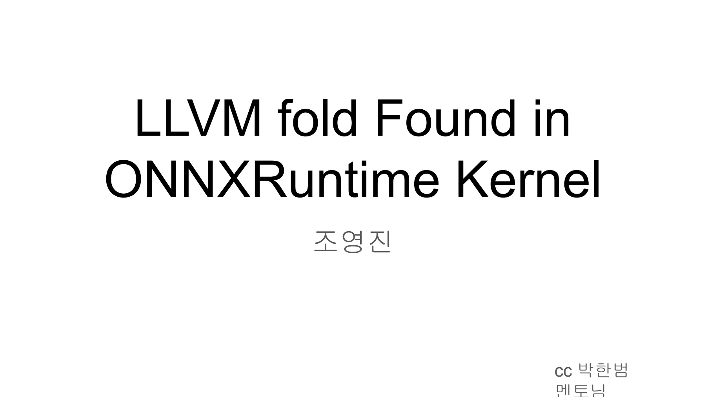
기반 지식 쌓기: shuffle 연산 / 벡터 [A, B, C, D] shuffle mask [0, 0, 1, 1] [A, A, B, B] / 이번 이슈에서는 복제 용도로
기반 지식 쌓기: shuffle 연산
벡터 [A, B, C, D]
shuffle mask [0, 0, 1, 1]
이번 이슈에서는 복제 용도로 사용
[A, A, B, B]
페이지 배치·기호·도식 확인하기

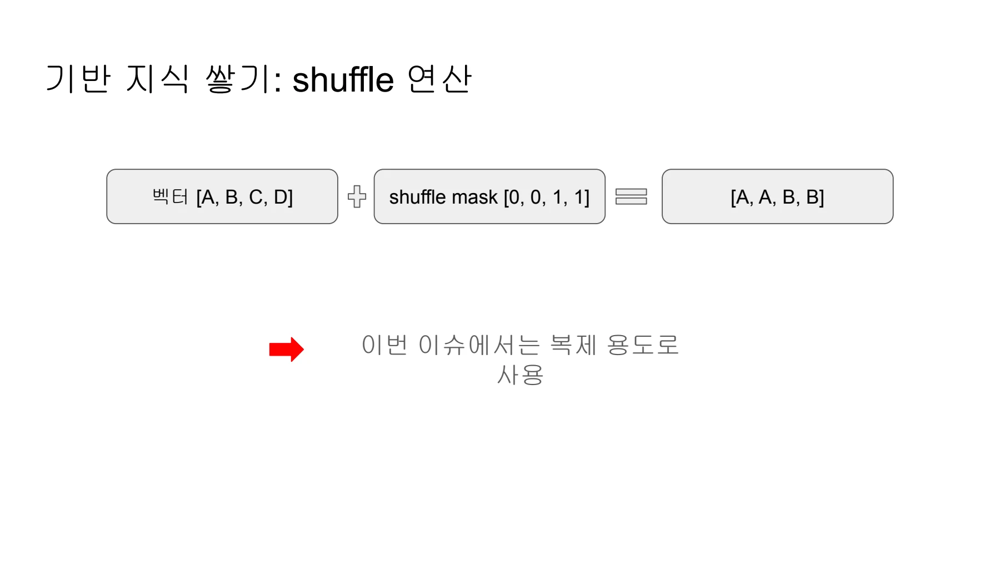
기반 지식 쌓기 (ONNX) / ONNX: Open Neural Network Exchange = Ai 모델을 위한 표현 형식(확장자) 중 하나 (유명) / ONNX Runtime: ONNX 모델을
기반 지식 쌓기 (ONNX)
ONNX: Open Neural Network Exchange = Ai 모델을 위한 표현 형식(확장자) 중 하나 (유명)
ONNX Runtime: ONNX 모델을 실행해 추론할 수 있도록 도와주는 프레임워크
둘 다 MS가 만드는데 참여. ONNX는 리눅스 산하의 비영리 오픈소스 프로젝트로 운영중
Runtime은 MS가 운영중
페이지 배치·기호·도식 확인하기

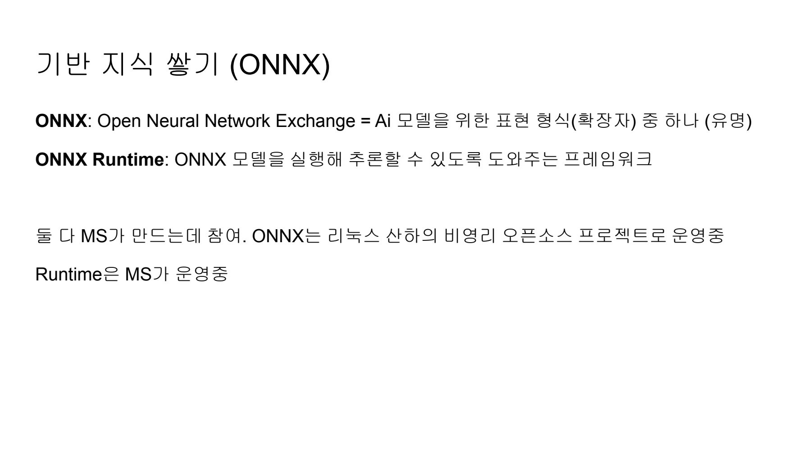
기반 지식 쌓기 (Quantization) / 양자화: 보통 모델을 학습할 때 FP32로 학습 -> 추론도 FP32 -> 데이터 타입 변경으로 추론을 / 빠르게 해보자! -> FP16, INT8,
기반 지식 쌓기 (Quantization)
양자화: 보통 모델을 학습할 때 FP32로 학습 -> 추론도 FP32 -> 데이터 타입 변경으로 추론을 빠르게 해보자! -> FP16, INT8, INT4 등 상당히 많은 연구 진행중
양자화 방법: INT8을 중심으로 설명
양자화에는 Scale, Zero-point가 필요 (Zero-point는 정수의 특정 값이 실수의 0을 표현하도록 위치 이동 역할)
일반 FP32 -> INT8
q = round(x / Scale) + Zero-point
Ex: 1.2를 양자화 = round(1.2 / 0.1) + 5 = 17 => FP32 1.2 -> INT8 17
일반 INT8 -> FP32
x ≈ (q - z) X S
Ex: INT8 역양자화 = (17 - 5) * 0.1 = 1.2 => INT8 17 -> FP32 1.2
페이지 배치·기호·도식 확인하기

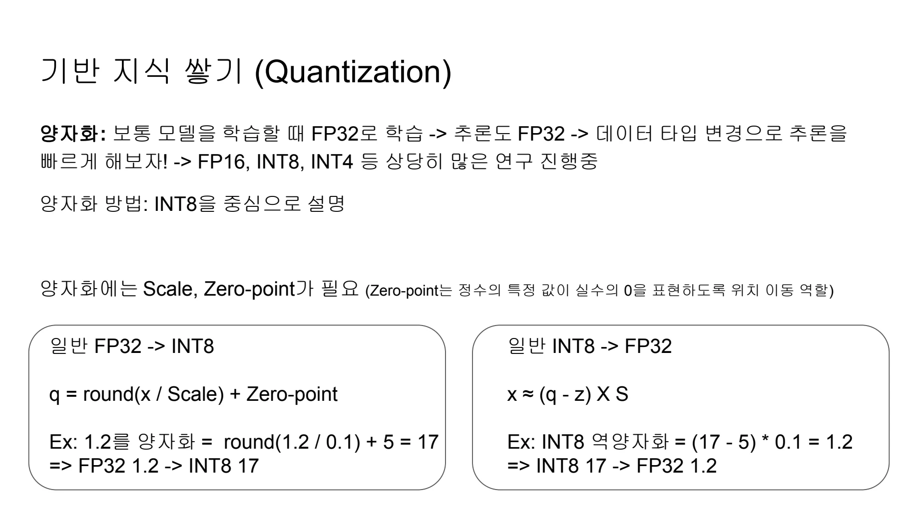
!!! 양자화시 Scale이 다르면? / Aq + Bq를 구해야하는 상황 / Aq = 17, SA = 0.1, ZA = 5
!!! 양자화시 Scale이 다르면?
Aq + Bq를 구해야하는 상황
Aq = 17, SA = 0.1, ZA = 5 Bq = 8, SB = 0.2, ZB = 3 output Scale / zero-count = 0.1 / 4
A 역양자화 (17 - 5) * 0.1 = 1.2
B 역양자화 (8 - 3) * 0.2 = 1.0
FP32끼리 + 1.2 + 1.0 = 2.2
output scale로 양자화 round(2.2 / 0.1) + 4 = 26
복잡한 과정 양자화 -> 역양자화 -> 연산 -> 양자화
페이지 배치·기호·도식 확인하기

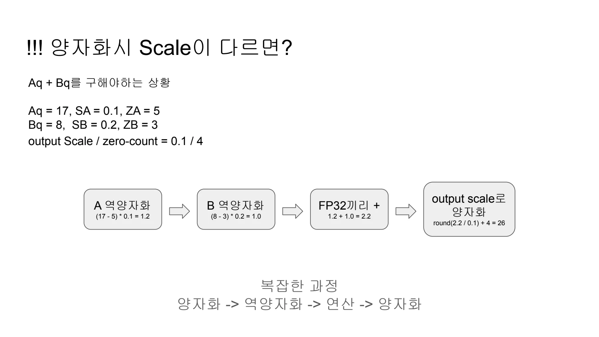
문제 상황: ONNXRuntime에서 AVX2에서의 INT8 양자화 덧셈 / Qc = Qa + Qb / INT32로 Scale로
문제 상황: ONNXRuntime에서 AVX2에서의 INT8 양자화 덧셈
Qc = Qa + Qb
Qa
Qb
INT8 Qa
INT8 Qb
INT32로 확장
INT32로 확장
Scale로 역양자화
Scale로 역양자화
FP32 SIMD Add
round / 재양자화
INT8 Qc
페이지 배치·기호·도식 확인하기

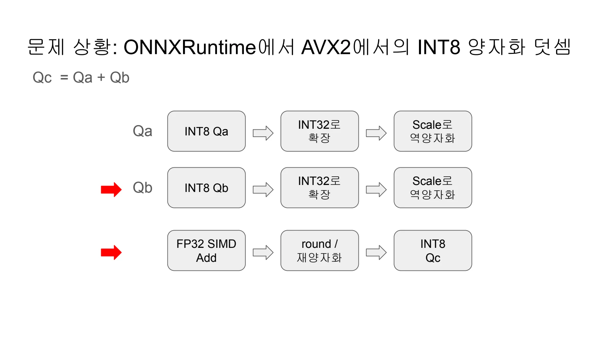
문제 상황: ONNXRuntime에서 AVX2에서의 INT8 양자화 덧셈 / 여기서 문제 발생! / INT32로 Scale로
문제 상황: ONNXRuntime에서 AVX2에서의 INT8 양자화 덧셈
여기서 문제 발생!
Qa INT8 Qa
INT32로 확장
Scale로 역양자화
Qb INT8 Qb
INT32로 확장
Scale로 역양자화
FP32 SIMD Add
round / 재양자화
INT8 Qc
페이지 배치·기호·도식 확인하기

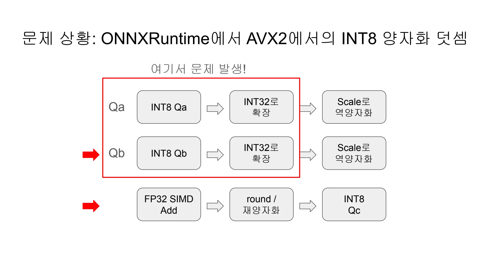
구체적인 문제: Qa + Qb = Qc 에서 역양자화 로직 / semantic = INT8 to INT32 / Shuffle의 mask
구체적인 문제: Qa + Qb = Qc 에서 역양자화 로직
semantic = INT8 to INT32
Shuffle의 mask
Shuffle의 mask
<I8 x 32> -> <8 x Fp32> 커널 I8 중 8개를 골라 shuffle -> bitcast -> shuffle -> bitcast (비효율) 그 뒤 Arithmetic Shift Reft(부호 유지 후 RShift) -> 부호 유지한 채 Signed i32 얻을 수 있음 그 뒤 Signed Integer TO Floating Point (signed Int -> FP32)

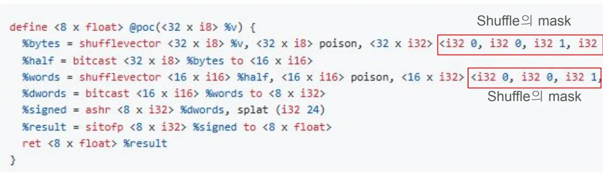
그림 안의 텍스트 · 문자 인식
Shuffle의 mask
define <8 x floaty epoc(<32 x 182 Sv) {
Bbytes = shufflevector <32x 18> %v, <32x 18> poison, <32 x 132> Ki32 0, 132 0, 132 1, 132
%half = bitcast <32× i8> Wbytes to <16× 116>
swords = Shufflevector <16 x 116> %half, <16x 116> poison, <16x 132> <132 0, 132 ,1321
%dwords = bitcast <16 × i16> %words to <8 × 132>
Shuffle의 mask
%signed = ashr <8x 132> %dwords, splat (132 24)
Bresult = sitofp <8 x 132> %signed to <8 x float>
ret <8 x float> %result이미지에서 읽은 문자입니다. 코드 기호는 그림에서 확인하세요.
페이지 배치·기호·도식 확인하기

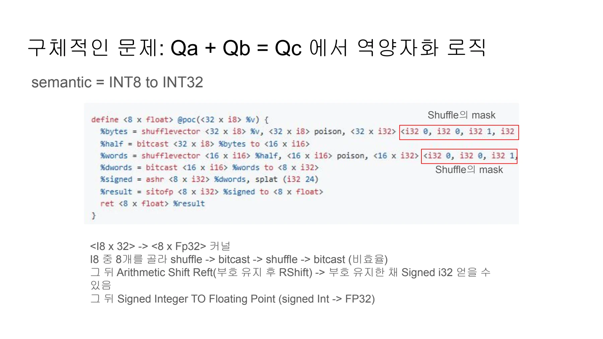
구체적인 문제: Qa + Qb = Qc 에서 역양자화 로직 / semantic = INT8 to INT32 / INT8 -2
구체적인 문제: Qa + Qb = Qc 에서 역양자화 로직
semantic = INT8 to INT32
INT8 -2 = 0xFE
INT16 = 0xFEFE
INT32 = 0xFEFEFEFE
INT32 (ashr i32 24 적용) = 0xFFFFFFFE = i32 -2
INT32 (sitofp i32 -2) 반환! = FP32 -2.0
페이지 배치·기호·도식 확인하기

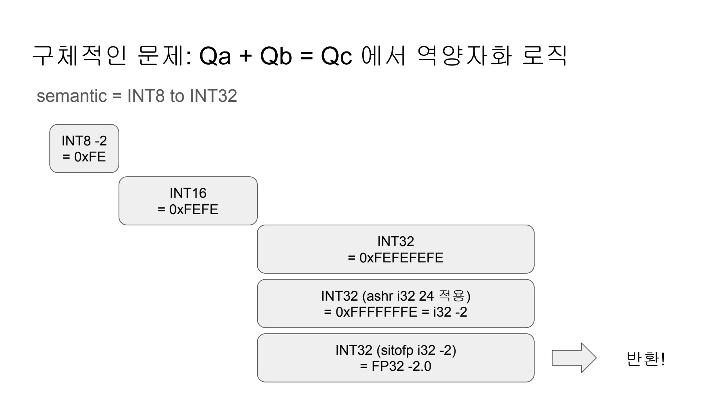
구체적인 문제: Qa + Qb = Qc 에서 역양자화 로직 / 비효율!!!! / semantic = INT8 to INT32
구체적인 문제: Qa + Qb = Qc 에서 역양자화 로직
비효율!!!!
semantic = INT8 to INT32
<I8 x 32> -> <8 x Fp32> 커널 I8 중 8개를 골라 한 번에 4배로 복사 -> i32로 캐스팅 그 뒤로는 동일하게 동작

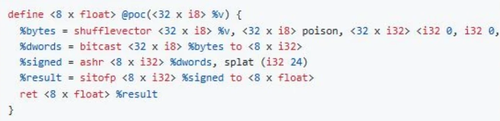
그림 안의 텍스트 · 문자 인식
define <8 x floaty epoc(<32 × i8> Sv) {
%bytes = shufflevector <32 X 18> 9v, <32 X 18> poison, <32 X 132> <132 0, 132 0,
%dwords = bitcast <32 × 18> %bytes to <8 × i32>
%signed = ashr <8 × 132> %dwords, splat (132 24)
%result = sitofp <8 x i32> %signed to <8 x float>
ret <8 x float> %result이미지에서 읽은 문자입니다. 코드 기호는 그림에서 확인하세요.
페이지 배치·기호·도식 확인하기

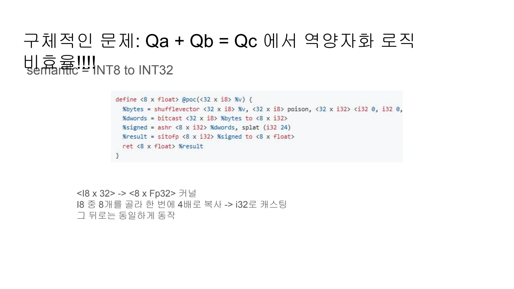
구체적인 문제: Qa + Qb = Qc 에서 역양자화 로직 비효율 / (해결) / semantic = INT8 to INT32
구체적인 문제: Qa + Qb = Qc 에서 역양자화 로직 비효율
(해결)
semantic = INT8 to INT32
INT8 -2 = 0xFE
사라짐!
INT32 = 0xFEFEFEFE
INT32 (ashr i32 24 적용) = 0xFFFFFFFE = i32 -2
INT32 (sitofp i32 -2) 반환! = FP32 -2.0
페이지 배치·기호·도식 확인하기

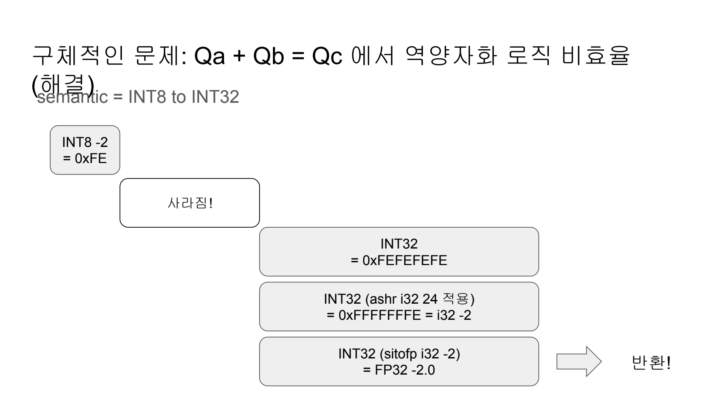
Alive 증명 / 원본 코드의 time out -> 아마 SMT(솔버)가 무거워졌기 때문 / => 그럼 우선 작은 예제로 시작 (i8x4 -> i32)
Alive 증명
원본 코드의 time out -> 아마 SMT(솔버)가 무거워졌기 때문 => 그럼 우선 작은 예제로 시작 (i8x4 -> i32)

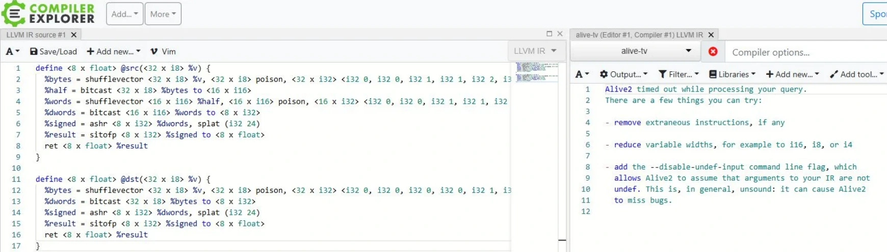
그림 안의 텍스트 · 문자 인식
• COMPILER
Add...
More
Spol
• EXPLORER
LLVM IR source #1 X
alive-tv (Editor#1, Compiler #1) LLVM IR X
A• a Save/Load + Add new... • V Vim
LLVM IR
alive-tv
"
Compiler options...
define <8 x float> @src(<32x 18> %v) {
%bytes - Shufflevector <32 X 18> %v, <32 X 18> poison, <32 x 132> <132 0, 132 0, 132 1, 132 1, 132 2, 13 T0aa-
A~ ☆ Output..
T Filter..• @ Libraries- +Add new... / Add tool...~
3
%half = bitcast <32 × i8> %bytes to <16× 116>
1
Alive2 timed out while processing your query•
%vords - shufflevector <16 x i16> 8half, <16 x i16> poison, <16 x 132> <132 0, i32 0, 132 1, 132 1, 132
There are a few things you can try:
5
%dwords = bitcast <16 × i16> %vords to <8 × i32>
%signed - ashr <8 x i32> %dvords, splat (132 24)
- remove extraneous instructions, if any
6
%result - sitofp <8 × 132> %signed to <8 × float>
5
ret <8 x float> %result
6
- reduce variable widths, for example to i16, 18, or 14
}
8
- add the --disable-undef-input command line flag, which
9
allows Alive2 to assume that arguments to your IR are not
define <8 x float> @dst(<32 × i8> %v) {
10
undef. This is, in general, unsound: it can cause Alive2
%bytes - shufflevector <32 x 18> %v, <32x 18> poison, <32 x 132> <132 0, 132 0, 132 0, 132 0, 132 1, 13
%dwords = bitcast <32 × i8> %bytes to <8 × i32>
11
to miss bugs.
%signed = ashr <8 x i32> %dwords, splat (132 24)
12
%result = sitofp <8 x i32> %signed to <8 x float>
ret <8 x float> %result이미지에서 읽은 문자입니다. 코드 기호는 그림에서 확인하세요.
페이지 배치·기호·도식 확인하기

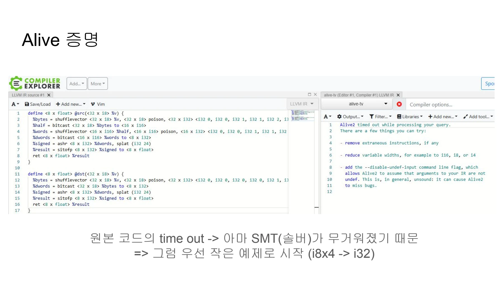
Alive 증명
Alive 증명

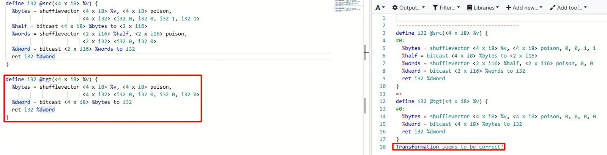
그림 안의 텍스트 · 문자 인식
define i32 Gsrc(<4 × 18> %v) {
%bytes = shufflevector <4 X 18> %v, <4 X 18> poison,
|<4 × 132> <132 0, 132 0, 132 1, 132 1>
%half = bitcast <4x i8> %bytes to <2× 116>
%vords = shufflevector <2 × 116> %half, <2 × i16> poison,
<2 × i32> <i32 0, 132 0>
%dword - bitcast <2× i16> %wvords to 132
ret i32 %dword
define i32 Gtgt(<4 × 18> %v) {
%bytes - shufflevector <4 x 18> %v, <4 x i8> poison,
<4 x 132> <132 0, 132 0, 132 0, 132 0>
%dvord = bitcast <4× i8> %bytes to i32
ret 132 %dword
A~ 후 output..• T Filter.• E Libraries- +Add new...- Add tool...
define i32 @src(<4 × 18> %v) {
#0:
%bytes - shufflevector <4 x 18> %v, <4 x 18> poison, 0, 0, 1,1
6
%half = bitcast <4 x i8> %bytes to <2 × i16>
%words - shufflevector <2 x i16> %half, <2 × i16> poison, 0, 0
8
%dword - bitcast <2 x i16> %words to 132
9
ret 132 %dword
10
}
=>
define 132 @tgt(<4 × 18> %v) {
13
#0:
14
%bytes- shufflevector <4x 18> %v, <4x i8> poison, 0, 0,0, 0
15
%dword - bitcast <4 x i8> %bytes to 132)
16
ret 132 %dword
17
18
Transformation seems to be correct!이미지에서 읽은 문자입니다. 코드 기호는 그림에서 확인하세요.
페이지 배치·기호·도식 확인하기

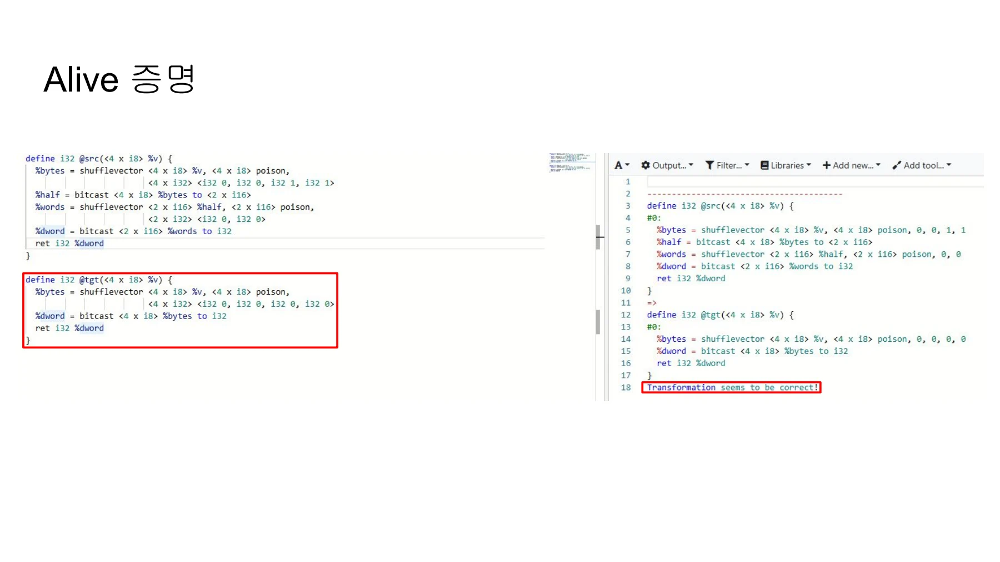
증명 - 실제 LLVM test에 원래 케이스 입력 / VectorCombine / %half, %words가 남아서 현재
증명 - 실제 LLVM test에 원래 케이스 입력
VectorCombine
%half, %words가 남아서 현재
LLVM은 fold를 못함이 증명!
LLVM 24.0.0git 소스 HEAD: 650a440ae377553ba804d09a89635f5293a8c9bd

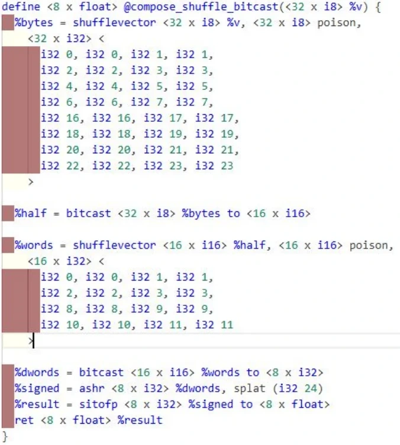
그림 안의 텍스트 · 문자 인식
define <8 x float》 @compose_shuffle_bitcast(<32 × 18> %v) {
%bytes = shufflevector <32 x 18> %v, <32 × 18> poison,
<32 X 132> <
132 0, i32 0, 132 1, 132 1,
132 2, 132 2, 132 3, 132 3,
132 4, 132 4, 132 5, 132 5,
132 6, 132 6, 132 7, 132 7.
132 16, 132 16, 132 17, 132 17,
132 18, 132 18, 132 19, 132 19,
132 20, 132 20, 132 21, 132 21,
132 22, 132 22, 132 23, 132 23
%half = bitcast <32 × i8> %bytes to <16 × 116>
%vords = shufflevector <16 × i16> %half, <16 × 116> poison,
<16 × i32> <
132 0, 132 0, 132 1, 132 1,
i32 2, 132 2, 132 3, 132 3,
i32 8, 132 8, i32 9, 132 9,
|132 10, 132 10, 132 11, 132 11
%dwords = bitcast <16 × 116> %words to <g x 132>
%signed = ashr <8 x 132> %dwords, splat (132 24)
%result = sitofp <8 x i32> %signed to <8 x float>
ret <8 x float> %nesult이미지에서 읽은 문자입니다. 코드 기호는 그림에서 확인하세요.

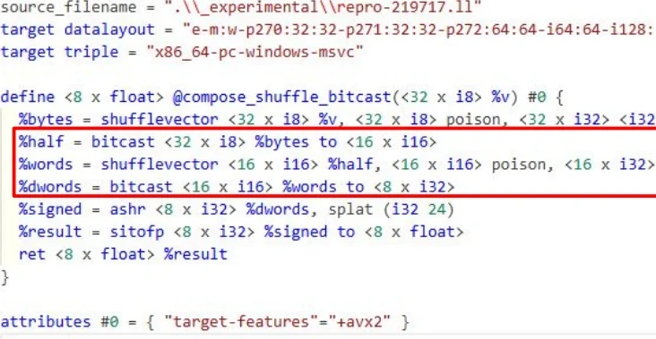
그림 안의 텍스트 · 문자 인식
source_filename = ".\Lexperimentall\repro-219717.11"
target datalayout = "e-m:w-p270:32:32-p271:32:32-p272:64:64-164:64-1128:
target triple = "x86_64-pC-windows-msvc"
define <8 x float》 @compose_shuffle_bitcast(<32 X 18>%v) #O{
%bytes = shufflevecton <32 x 18> %v, <32 x 18> poison, <32 X 132> <132
%half = bitcast <32 × i8> %bytes to <16 × i16>
%wvords = shufflevector <16 x i16> %half, <16 X 116> poison, <16 × i32>
%dwords = bitcast <16 X 116> %words to <8 x i32>
%signed = ashr <8 × i32> %dwords, splat (i32 24)
%result = sitofp <8 X i32> %signed to <8 × float>
ret <8 x float> %result
attributes #o ={ "target-features"="+avx2" }이미지에서 읽은 문자입니다. 코드 기호는 그림에서 확인하세요.
페이지 배치·기호·도식 확인하기

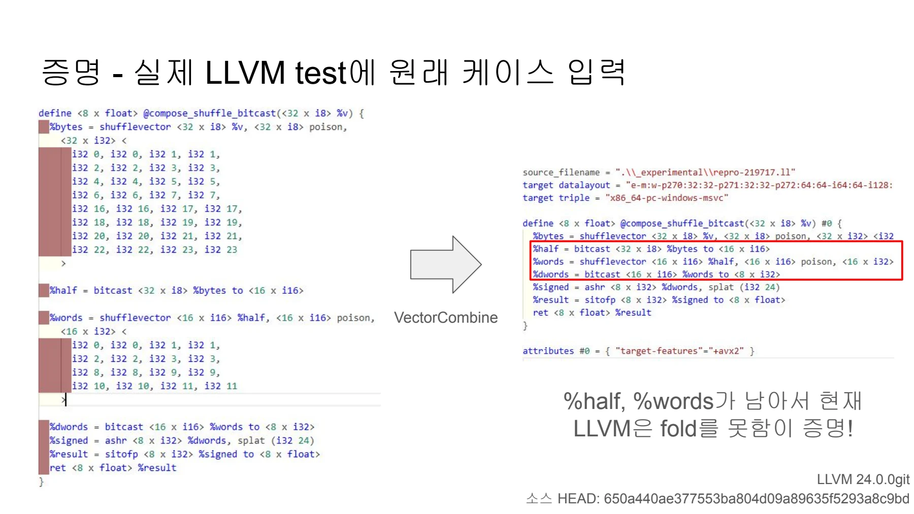
어디에 패치해야할까요…. 개념적 fold
어디에 패치해야할까요…. 개념적 fold

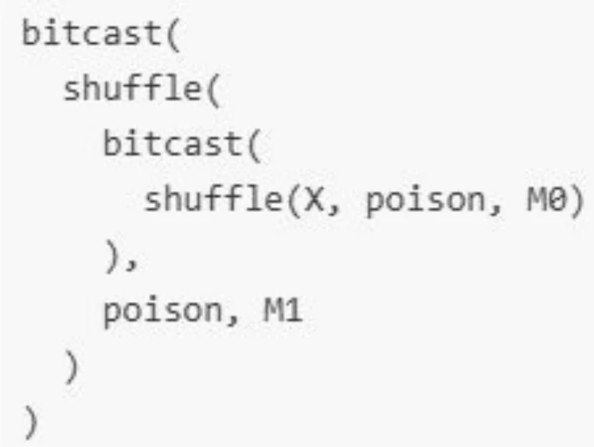
그림 안의 텍스트 · 문자 인식
bitcast( shuffle( bitcast( shuffle(X, poison, Me) ), poison, M1
이미지에서 읽은 문자입니다. 코드 기호는 그림에서 확인하세요.

그림 안의 텍스트 · 문자 인식
bitcast( shuffle(x, poison, compose(Ne, Scale(M1)))
이미지에서 읽은 문자입니다. 코드 기호는 그림에서 확인하세요.
페이지 배치·기호·도식 확인하기

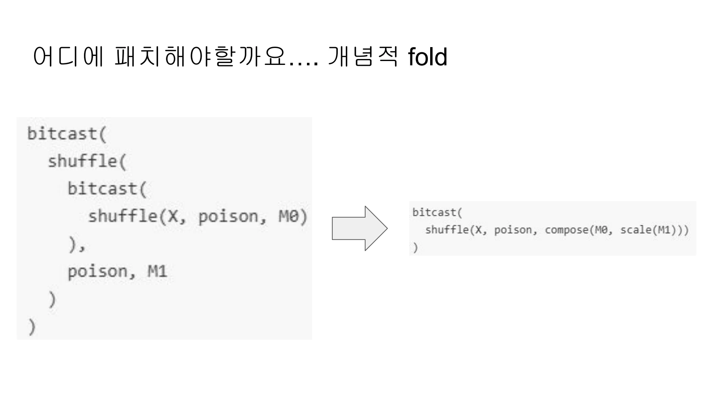
어디에 패치해야할까요…. 기존 함수들 분석
어디에 패치해야할까요…. 기존 함수들 분석

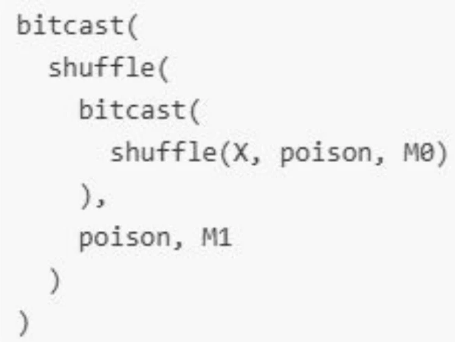
그림 안의 텍스트 · 문자 인식
bitcast( shuffle( bitcast( shuffle(X, poison, Me) ), poison, M1
이미지에서 읽은 문자입니다. 코드 기호는 그림에서 확인하세요.

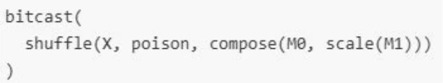
그림 안의 텍스트 · 문자 인식
bitcast( shuffle(X, poison, compose(Ne, scale(M1)))
이미지에서 읽은 문자입니다. 코드 기호는 그림에서 확인하세요.
페이지 배치·기호·도식 확인하기

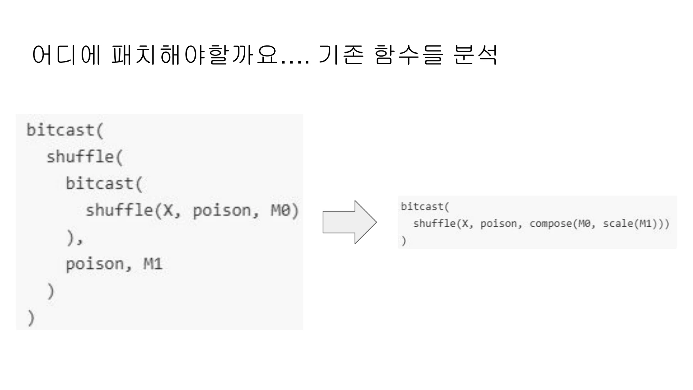
핵심 원리와 편집 주석
실제 사용 맥락
양자화된 두 텐서의 scale과 zero point가 다르면 정수 값만 바로 더할 수 없다. 입력을 더 넓은 타입으로 옮겨 보정하는 계산이 필요하다.
자료는 ONNX Runtime의 AVX2 INT8 덧셈 커널에서 이 과정이 생성한 IR을 분석한다. 원소 복제용 shuffle과 INT8→INT32 확장이 핵심이다.
관찰한 비효율
확장과 셔플의 순서 때문에 중간 vector가 생기고 불필요한 데이터 조합이 남을 수 있다. 목표는 같은 원소를 결과 위치에 보내면서 더 직접적인 확장·셔플 순서를 찾는 것이다.
mask는 원소의 출처를 정한다. 숫자 값이 비슷해 보인다는 이유로 mask를 바꾸면 안 된다. 부호 확장과 0 확장도 구분한다.
작은 입력에서 시작한 검증
전체 IR의 Alive2 검증은 시간 초과가 발생했다고 기록한다. 작성자는 작은 vector 예제로 줄여 의미를 확인하는 접근을 사용했다.
- 원래 kernel의 값 흐름과 shuffle mask를 기록한다.
- 작은 vector 예제를 만든다.
- 확장 전후에 각 원소가 어디로 이동하는지 확인한다.
- Alive2의 성공·시간 초과 결과를 구분한다.
- 원래 크기의 IR을 LLVM 테스트 입력으로 다시 확인한다.
패치 위치와 진행 상태
자료는 VectorCombine의 기존 함수와 새 fold의 위치를 검토한다. 실제 테스트에서는 기대한 중간 값이 남아 있는 결과도 제시한다.
문서 전문과 버전
- PDFPDF 원자료 · 16쪽260906_-_found_LLVM_fold_in_ONNXRuntime_Kernel.pdf
각 자료는 별도의 버전입니다. 같은 주제라도 구현 상태·설명 범위·수치가 다를 수 있습니다.
관련 이슈와 PR
자료에 기재된 공개 링크는 본문에서 확인할 수 있습니다.
구현·병합 상태와 측정값은 해당 제출 자료의 작성 시점 기준입니다.